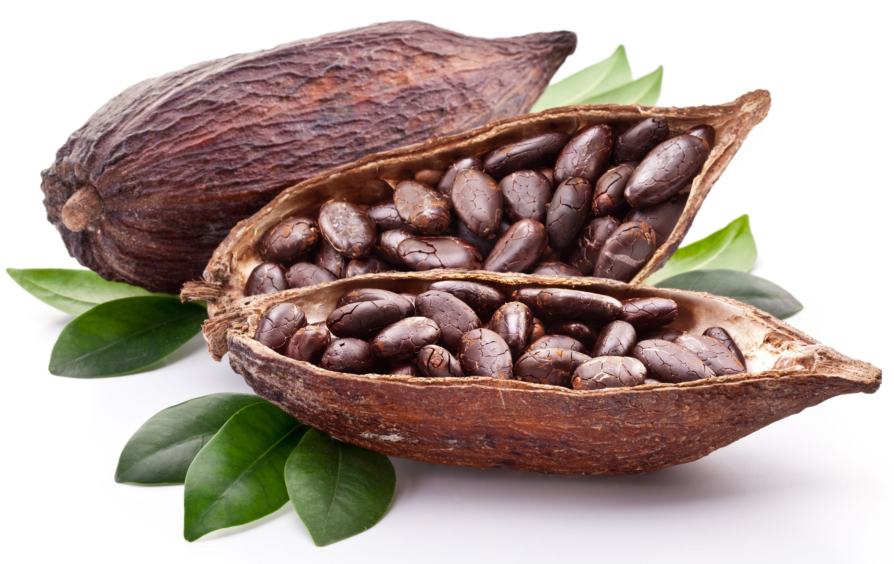
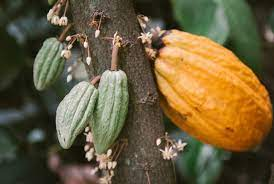

Teobroma cacao L. es el nombre cientifico que recibe el arbol del cacao o cacaotero, nativo de regiones tropicales
subtropica de America del Sur, America Tropical, planta de hoja perenne de la familia malvasea teobroma significa, en griego alimento de los dioses.
El cacao es rico en miconutrientes como polifenoles y potentes flabonoides antioxidantes,
el cacao es una planta nativa de las selvas lluviosas del conteninte americano.Habita en la sombra de la selva sobre
los suelos humedos, bien drenados, con abundante materia mecanica.
Se utiliza para elaborar confiteria en la industria farmaceutica y cosmetica para fabricar productos como;labiales, cremas humectantes, jabones, champu, etc.
Incluso la pasta o licor de cacao. Y se usan para hacer chocolate.
BENEFICIOS:ayudan a reducir inflamacion, bajar la presion arterial y mejora el colesterol/azucar en la sangre ayuda a mantener el corazon sano
DATOS.Su consumo excesivo puede producir nerviosismo, puede producir gastristis o malestares digestivos, no es recomendado para los diabeticos y les puede producir migraña o sobrepeso.
Si lo consume en exceso podras desarollar problemas en el higado o la vejiga debido al contenido de caloricos y su endulsamiento.
ELABORADO POR:Mauro, Daniela, Fatima